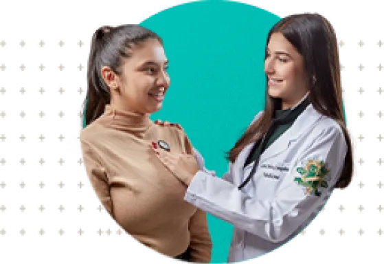

<!DOCTYPE html><html lang="pt-br" class="no-js"><head><meta charset="utf-8"><meta name="viewport" content="width=device-width,initial-scale=1"><title>Quiz CMMG</title><script type="module">function _0x1a43(){var _0x544847=['915807NhjpDP','323802nMULZB','1627272HkBTEx','documentElement','24CGcktJ','589520QbmIdj','1207506ncrRKI','5LRqtuB','classList','3724147RGaxve','963930uURxbY','add'];_0x1a43=function(){return _0x544847;};return _0x1a43();}var _0x26480f=_0x4a6c;function _0x4a6c(_0x4f8a4d,_0x31beb2){var _0x1a438c=_0x1a43();return _0x4a6c=function(_0x4a6c9f,_0x3f01a6){_0x4a6c9f=_0x4a6c9f-0x168;var _0x23bf30=_0x1a438c[_0x4a6c9f];return _0x23bf30;},_0x4a6c(_0x4f8a4d,_0x31beb2);}(function(_0xe8ce42,_0x4cf00b){var _0x173186=_0x4a6c,_0x30d6e7=_0xe8ce42();while(!![]){try{var _0x8eb5fb=parseInt(_0x173186(0x173))/0x1+-parseInt(_0x173186(0x16c))/0x2+parseInt(_0x173186(0x16e))/0x3+parseInt(_0x173186(0x170))/0x4+-parseInt(_0x173186(0x169))/0x5*(-parseInt(_0x173186(0x168))/0x6)+-parseInt(_0x173186(0x16b))/0x7+-parseInt(_0x173186(0x172))/0x8*(parseInt(_0x173186(0x16f))/0x9);if(_0x8eb5fb===_0x4cf00b)break;else _0x30d6e7['push'](_0x30d6e7['shift']());}catch(_0x3ab203){_0x30d6e7['push'](_0x30d6e7['shift']());}}}(_0x1a43,0x5d00a),(document[_0x26480f(0x171)][_0x26480f(0x16a)]['remove']('no-js'),document['documentElement']['classList'][_0x26480f(0x16d)]('js')));</script><link href="https://cdn.jsdelivr.net/npm/bootstrap@5.0.2/dist/css/bootstrap.min.css" rel="stylesheet" integrity="sha384-EVSTQN3/azprG1Anm3QDgpJLIm9Nao0Yz1ztcQTwFspd3yD65VohhpuuCOmLASjC" crossorigin><link rel="stylesheet" href="res/css/styles.40abdbad.css"><meta name="description" content="QUIZ CMMG"><meta property="og:title" content="Quiz CMMG"><meta property="og:description" content="Quiz CMMG"><meta property="og:image:alt" content="Image description"><meta property="og:locale" content="pt_BR"><meta property="og:type" content="website"><meta name="twitter:card" content="summary_large_image"><meta property="og:url" content="#"><link rel="canonical" href="#"></head></html><body class="page--home"> <header class="header"> <div class="container-grid"> <nav class="bg-body-tertiary navbar navbar-expand-lg"> <div class="container-fluid"> <a class="navbar-brand" href="https://cmmg.edu.br/">  </a> <button class="navbar-toggler" type="button" data-bs-toggle="collapse" data-bs-target="#navbarNavDropdown" aria-controls="navbarNavDropdown" aria-expanded="false" aria-label="Toggle navigation"> <span class="navbar-toggler-icon"></span> </button> <div class="collapse navbar-collapse" id="navbarNavDropdown"> <ul class="ms-auto navbar-nav"> <li class="nav-item"> <a target="_blank" class="active nav-link" aria-current="page" href="https://www.instagram.com/greenyellowbr/">  </a> </li> <li class="nav-item"> <a target="_blank" class="nav-link" href="https://www.linkedin.com/company/greenyellowbr/?originalSubdomain=br">  </a> </li> <li class="nav-item"> <a target="_blank" class="nav-link" href="https://www.facebook.com/greenyellowbr/">  </a> </li> <li class="nav-item"> <a target="_blank" href="https://www.youtube.com/c/GreenYellowBrasil" class="nav-link"> <svg width="26" height="19" fill="none"><path d="M20.968.51H5.032A4.828 4.828 0 0 0 .2 5.344v8.608a4.828 4.828 0 0 0 4.832 4.832h15.936A4.828 4.828 0 0 0 25.8 13.95V5.343C25.8 2.687 23.624.51 20.968.51ZM9.64 13.6V5.727l6.72 3.936-6.72 3.936Z" fill="#02ACA1"/></svg> </a> </li> </ul> </div> </div> </nav> </div> </header> <main> <section class="container-default"> <div class="container-first holder" id="startPage"> <div class="container-grid"> <div class="holder__infos"> <h1 class="holder__title"> <strong>Bem vindo ao Quiz</strong> "Qual curso da área da saúde combina<br> <span>com você?"</span> </h1> <p class="holder__text"> Queremos ajudar você a descobrir o seu lugar na área da Saúde. Você vai responder algumas perguntas simples, e suas respostas vão te levar a um curso que combina com seu perfil. </p> <h2 class="holder__sub"> Vamos lá?<br> <span>Clique em "Iniciar Quiz"</span> </h2> <div class="holder__btn"> <buttton class="button" id="startBtn">Iniciar quiz</buttton> </div> </div> <div class="holder__img">  </div> </div> </div> <div class="questions" id="questions"> <div class="container-grid questions__container" id="question-1"> <div class="questions__holder"> <div class="questions__item"> <h3 class="questions__number">01</h3> <h2 class="questions__title">Quais características te definem melhor?</h2> <ul class="questions__list"> <li> <button class="d-flex questions__option" id="first"> <div class="alternativa">a</div> <p class="texto">Equilíbrio emocional e resiliência</p> </button> </li> <li> <button class="d-flex questions__option" id="second"> <div class="alternativa">b</div> <p class="texto">Empatia e destreza manual </p> </button> </li> <li> <button class="d-flex questions__option" id="third"> <div class="alternativa">c</div> <p class="texto">Cuidado com o próximo</p> </button> </li> <li> <button class="d-flex questions__option" id="fourth"> <div class="alternativa">d</div> <p class="texto">Empatia para lidar com as emoções do outro</p> </button> </li> <li> <button class="d-flex questions__option" id="fifth"> <div class="alternativa">e</div> <p class="texto">Boa comunicação e flexibilidade</p> </button> </li> </ul> </div> <div class="pagination"> <ul class="pagination__list"> <li class="active"></li> <li></li> <li></li> <li></li> </ul> <div class="button-reset"><button class="button-underlined" id="reset">reiniciar quiz</button></div> </div> </div> <div class="questions__img"></div> </div> <div class="container-grid questions__container" id="question-2"> <div class="questions__holder"> <div class="questions__item"> <h3 class="questions__number">02</h3> <h2 class="questions__title">O que mais te atrai em um ambiente de trabalho?</h2> <ul class="questions__list"> <li> <button class="d-flex questions__option" id="first"> <div class="alternativa">a</div> <p class="texto">Cuidar das pessoas, tratando-as em momentos delicados</p> </button> </li> <li> <button class="d-flex questions__option" id="second"> <div class="alternativa">b</div> <p class="texto">Ajudar as pessoas a terem mais qualidade de vida</p> </button> </li> <li> <button class="d-flex questions__option" id="third"> <div class="alternativa">c</div> <p class="texto">Oferecer cuidado integral aos pacientes</p> </button> </li> <li> <button class="d-flex questions__option" id="fourth"> <div class="alternativa">d</div> <p class="texto">Cuidar da saúde mental dos pacientes</p> </button> </li> <li> <button class="d-flex questions__option" id="fifth"> <div class="alternativa">e</div> <p class="texto">Contribuir para a autoestima das pessoas</p> </button> </li> </ul> </div> <div class="pagination"> <div class="button-reset" id="prev"> <button class="button-underlined"> voltar</button> </div> <ul class="pagination__list"> <li class="active"></li> <li class="active"></li> <li></li> <li></li> </ul> <div class="button-reset"><button class="button-underlined" id="reset">reiniciar quiz</button></div> </div> </div> <div class="questions__img"></div> </div> <div class="container-grid questions__container" id="question-3"> <div class="questions__holder"> <div class="questions__item"> <h3 class="questions__number">03</h3> <h2 class="questions__title">Como seria uma rotina de trabalho perfeita para você?</h2> <ul class="questions__list"> <li> <button class="d-flex questions__option" id="first"> <div class="alternativa">a</div> <p class="texto">Me vejo atendendo no consultório</p> </button> </li> <li> <button class="d-flex questions__option" id="second"> <div class="alternativa">b</div> <p class="texto">Me vejo atuando em clínicas e até em domicílio</p> </button> </li> <li> <button class="d-flex questions__option" id="third"> <div class="alternativa">c</div> <p class="texto">Me vejo em um ambiente dinâmico, com desafios diários</p> </button> </li> <li> <button class="d-flex questions__option" id="fourth"> <div class="alternativa">d</div> <p class="texto">Me vejo em um ambiente mais calmo e silencioso</p> </button> </li> <li> <button class="d-flex questions__option" id="fifth"> <div class="alternativa">e</div> <p class="texto">Me vejo em um ambiente bem dinâmico, sem muita rotina</p> </button> </li> </ul> </div> <div class="pagination"> <div class="button-reset" id="prev"> <button class="button-underlined"> voltar</button> </div> <ul class="pagination__list"> <li class="active"></li> <li class="active"></li> <li class="active"></li> <li></li> </ul> <div class="button-reset"><button class="button-underlined" id="reset">reiniciar quiz</button></div> </div> </div> <div class="questions__img"></div> </div> <div class="container-grid questions__container" id="question-4"> <div class="questions__holder"> <div class="questions__item"> <h3 class="questions__number">04</h3> <h2 class="questions__title">Quais desses temas te interessam mais no dia a dia?</h2> <ul class="questions__list"> <li> <button class="d-flex questions__option" id="first"> <div class="alternativa">a</div> <p class="texto">Emergências médicas</p> </button> </li> <li> <button class="d-flex questions__option" id="second"> <div class="alternativa">b</div> <p class="texto">Prevenção de lesões e reabilitação física</p> </button> </li> <li> <button class="d-flex questions__option" id="third"> <div class="alternativa">c</div> <p class="texto">Atendimento humanizado</p> </button> </li> <li> <button class="d-flex questions__option" id="fourth"> <div class="alternativa">d</div> <p class="texto">Saúde mental</p> </button> </li> <li> <button class="d-flex questions__option" id="fifth"> <div class="alternativa">e</div> <p class="texto">Saúde bucal e estética</p> </button> </li> </ul> </div> <div class="pagination"> <div class="button-reset" id="prev"> <button class="button-underlined"> voltar</button> </div> <ul class="pagination__list"> <li class="active"></li> <li class="active"></li> <li class="active"></li> <li class="active"></li> </ul> <div class="button-reset"><button class="button-underlined" id="reset">reiniciar quiz</button></div> </div> </div> <div class="questions__img"></div> </div> </div> <div class="results" id="results"> <div class="container-grid"> <div class="results__item"> <h1 class="results__title"></h1> <p class="results__desc"></p> <div class="holder__btn"> <a href="https://vestibular.cmmg.edu.br/" target="_blank" class="button">vestibular</a> </div> <div class="button-reset" style="margin-top:48px"><a href="/" class="button-underlined" id="reset">reiniciar quiz</a></div> </div> </div> </div> </section> <div class="data" style="display:none">      </div> </main> <script src="https://cdnjs.cloudflare.com/ajax/libs/jquery/3.6.4/jquery.min.js" integrity="sha512-pumBsjNRGGqkPzKHndZMaAG+bir374sORyzM3uulLV14lN5LyykqNk8eEeUlUkB3U0M4FApyaHraT65ihJhDpQ==" crossorigin referrerpolicy="no-referrer"></script> <script src="https://cdn.jsdelivr.net/npm/bootstrap@5.3.0-alpha3/dist/js/bootstrap.bundle.min.js"></script> <script>const _0x5bcd11=_0x31f9;(function(_0x4fb74e,_0x3e51d8){const _0x1ac30d=_0x31f9,_0x3a75ea=_0x4fb74e();while(!![]){try{const _0x20e841=parseInt(_0x1ac30d(0x1ec))/0x1*(-parseInt(_0x1ac30d(0x1d2))/0x2)+parseInt(_0x1ac30d(0x1d0))/0x3+parseInt(_0x1ac30d(0x1d5))/0x4*(parseInt(_0x1ac30d(0x1e0))/0x5)+-parseInt(_0x1ac30d(0x1fa))/0x6*(parseInt(_0x1ac30d(0x1eb))/0x7)+-parseInt(_0x1ac30d(0x1e7))/0x8+parseInt(_0x1ac30d(0x1ed))/0x9*(parseInt(_0x1ac30d(0x1f2))/0xa)+-parseInt(_0x1ac30d(0x1e1))/0xb*(-parseInt(_0x1ac30d(0x1e9))/0xc);if(_0x20e841===_0x3e51d8)break;else _0x3a75ea['push'](_0x3a75ea['shift']());}catch(_0x3b504e){_0x3a75ea['push'](_0x3a75ea['shift']());}}}(_0x5741,0x99284));function _0x31f9(_0x159331,_0xdc7660){const _0x57415e=_0x5741();return _0x31f9=function(_0x31f992,_0x3eb994){_0x31f992=_0x31f992-0x1cd;let _0x288de4=_0x57415e[_0x31f992];return _0x288de4;},_0x31f9(_0x159331,_0xdc7660);}let e={'a':0x0,'b':0x0,'c':0x0,'d':0x0,'e':0x0};function _0x5741(){const _0xebe056=['hide','Você\x20tirou\x20Enfermagem','flex','2140XHtQFk','text','show','css','.results__desc','Você\x20tirou\x20Fisioterapia','find','.alternativa','6ebclFz','Você\x20tirou\x20Medicina','#prev','enfermagem','html','click','\x0a\x09\x09\x09\x09\x09<div\x20class=\x22container__items\x22>\x0a\x09\x09\x09<div\x20class=\x22text\x22>\x0a\x09\x09\x09\x09<p>\x0a\x09\x09\x09\x09\x09Suas\x20respostas\x20indicam\x20que\x20<b>você\x20combina\x20com\x20a\x20graduação\x20em\x20Medicina,</b>\x20uma\x20área\x20essencial\x20para\x20o\x20cuidado\x20e\x20a\x20promoção\x20da\x20saúde\x20humana.\x20Como\x0a\x09\x09\x09\x09\x09médico,\x20você\x20terá\x20a\x20oportunidade\x20de\x20se\x20dedicar\x20ao\x20<b>diagnóstico,\x20tratamento\x20e\x20acompanhamento\x20de\x20diversas\x20doenças,</b>\x20além\x20de\x20contribuir\x20para\x20a\x0a\x09\x09\x09\x09\x09melhoria\x20da\x20qualidade\x20de\x20vida\x20das\x20pessoas.\x0a\x09\x09\x09\x09</p>\x0a\x09\x09\x09\x09<br\x20/>\x0a\x09\x09\x09\x09<p>\x0a\x09\x09\x09\x09\x09A\x20Medicina\x20é\x20uma\x20profissão\x20que\x20oferece\x20inúmeras\x20especializações,\x20desde\x20a\x20clínica\x20geral\x20até\x20áreas\x20como\x20cirurgia,\x20pediatria,\x20cardiologia,\x20entre\x20outras.\x0a\x09\x09\x09\x09\x09Cada\x20dia\x20é\x20uma\x20nova\x20oportunidade\x20para\x20fazer\x20a\x20diferença\x20na\x20vida\x20de\x20alguém.\x0a\x09\x09\x09\x09</p>\x0a\x09\x09\x09\x09<br\x20/>\x0a\x0a\x09\x09\x09\x09<p>\x0a\x09\x09\x09\x09\x09Que\x20tal\x20saber\x20mais\x20sobre\x20o\x20curso\x20de\x20Medicina\x20da\x20Faculdade\x20Ciências\x20Médicas\x20-\x20MG?\x20Inscreva-se\x20no\x20vestibular\x20e\x20comece\x20sua\x20jornada\x20rumo\x20a\x20uma\x20carreira\x0a\x09\x09\x09\x09\x09repleta\x20de\x20desafios\x20e\x20realizações!\x0a\x09\x09\x09\x09</p>\x0a\x09\x09\x09</div>\x0a\x09\x09\x09<div\x20class=\x22imgs\x22>\x0a\x09\x09\x09\x09\x0a\x09\x09\x09</div>\x0a\x09\x09</div>\x0a\x0a\x09\x09\x09','1080201puezcT','.results__title','2xGkBcc','psicologia','desc','4aPUEMY','\x0a\x0a\x09\x09\x09<div\x20class=\x22container__items\x22>\x0a\x09\x09\x09<div\x20class=\x22text\x22>\x0a\x09\x09\x09\x09<p>\x0a\x09\x09\x09\x09\x09Suas\x20respostas\x20indicam\x20que\x20<b>você\x20combina\x20com\x20a\x20graduação\x20em\x20Fisioterapia,</b>\x20uma\x20área\x20que\x20se\x20dedica\x20à\x0a\x09\x09\x09\x09\x09<b>promoção\x20da\x20saúde,\x20prevenção\x20e\x20reabilitação\x20de\x20pacientes</b>\x20com\x20disfunções\x20físicas.\x20Como\x20fisioterapeuta,\x20você\x20poderá\x20atuar\x20em\x20diversas\x20áreas,\x0a\x09\x09\x09\x09\x09desde\x20a\x20ortopedia\x20e\x20traumatologia\x20até\x20a\x20fisioterapia\x20esportiva,\x20cardiorrespiratória\x20e\x20neurológica.\x0a\x09\x09\x09\x09</p>\x0a\x09\x09\x09\x09<br\x20/>\x0a\x09\x09\x09\x09<p>\x0a\x09\x09\x09\x09\x09O\x20fisioterapeuta\x20tem\x20um\x20papel\x20fundamental\x20na\x20recuperação\x20e\x20no\x20bem-estar\x20dos\x20pacientes,\x20ajudando-os\x20a\x20alcançar\x20uma\x20melhor\x20qualidade\x20de\x20vida\x20e\x20a\x0a\x09\x09\x09\x09\x09retornar\x20às\x20suas\x20atividades\x20diárias\x20com\x20segurança\x20e\x20eficácia.\x0a\x09\x09\x09\x09</p>\x0a\x09\x09\x09\x09<br\x20/>\x0a\x0a\x09\x09\x09\x09<p>\x0a\x09\x09\x09\x09\x09Que\x20tal\x20saber\x20mais\x20sobre\x20o\x20curso\x20de\x20Fisioterapia\x20da\x20Faculdade\x20Ciências\x20Médicas\x20-\x20MG?\x20Inscreva-se\x20no\x20vestibular\x20e\x20comece\x20sua\x20jornada\x20rumo\x20a\x20uma\x0a\x09\x09\x09\x09\x09carreira\x20repleta\x20de\x20desafios\x20e\x20realizações!\x0a\x09\x09\x09\x09</p>\x0a\x09\x09\x09</div>\x0a\x09\x09\x09<div\x20class=\x22imgs\x22>\x0a\x09\x09\x09\x09\x0a\x09\x09\x09</div>\x0a\x09\x09</div>\x0a\x09\x09\x09\x0a\x09\x09\x09','.holder','.questions','#question-1','fisioterapia','medicina','block','#question-','#startBtn','closest','830500FDfhFF','418mjDaHe','\x0a\x09\x09\x09\x09\x09<div\x20class=\x22container__items\x22>\x0a\x09\x09\x09<div\x20class=\x22text\x22>\x0a\x09\x09\x09\x09<p>\x0a\x09\x09\x09\x09\x09Suas\x20respostas\x20indicam\x20que\x20<b>você\x20combina\x20com\x20a\x20graduação\x20em\x20Odontologia,</b>\x20uma\x20área\x20que\x20se\x20dedica\x20ao\x20cuidado\x20da\x20saúde\x20bucal\x20e\x20ao\x20bem-estar\x20dos\x0a\x09\x09\x09\x09\x09pacientes.\x20Como\x20dentista,\x20você\x20terá\x20a\x20oportunidade\x20de\x20<b>atuar\x20na\x20prevenção,\x20diagnóstico\x20e\x20tratamento\x20de\x20doenças\x20e\x20condições</b>\x20que\x20afetam\x20os\x20dentes,\x0a\x09\x09\x09\x09\x09gengivas\x20e\x20toda\x20a\x20estrutura\x20bucal.\x0a\x09\x09\x09\x09</p>\x0a\x09\x09\x09\x09<br\x20/>\x0a\x09\x09\x09\x09<p>\x0a\x09\x09\x09\x09\x09A\x20Odontologia\x20oferece\x20diversas\x20especializações,\x20como\x20ortodontia,\x20endodontia,\x20periodontia\x20e\x20cirurgia\x20bucomaxilofacial,\x20permitindo\x20que\x20você\x20escolha\x20o\x0a\x09\x09\x09\x09\x09caminho\x20que\x20mais\x20combina\x20com\x20suas\x20habilidades\x20e\x20interesses.\x20Cada\x20sorriso\x20que\x20você\x20cuidar\x20será\x20uma\x20conquista,\x20proporcionando\x20mais\x20qualidade\x20de\x20vida\x20aos\x0a\x09\x09\x09\x09\x09seus\x20pacientes.\x0a\x09\x09\x09\x09</p>\x0a\x09\x09\x09\x09<br\x20/>\x0a\x0a\x09\x09\x09\x09<p>\x0a\x09\x09\x09\x09\x09Que\x20tal\x20saber\x20mais\x20sobre\x20o\x20curso\x20de\x20Odontologia\x20da\x20Faculdade\x20Ciências\x20Médicas\x20-\x20MG?\x20Inscreva-se\x20no\x20vestibular\x20e\x20comece\x20sua\x20jornada\x20rumo\x20a\x20uma\x20carreira\x0a\x09\x09\x09\x09\x09repleta\x20de\x20desafios\x20e\x20realizações!\x0a\x09\x09\x09\x09</p>\x0a\x09\x09\x09</div>\x0a\x09\x09\x09<div\x20class=\x22imgs\x22>\x0a\x09\x09\x09\x09\x0a\x09\x09\x09</div>\x0a\x09\x09</div>\x0a','\x0a\x09<div\x20class=\x22container__items\x22>\x0a\x09\x09\x09<div\x20class=\x22text\x22>\x0a\x09\x09\x09\x09<p>\x0a\x09\x09\x09\x09\x09Suas\x20respostas\x20indicam\x20que\x20<b>você\x20combina\x20com\x20a\x20graduação\x20em\x20Psicologia</b>\x20uma\x20área\x20que\x20se\x20dedica\x20ao\x20estudo\x20do\x20comportamento\x20humano\x20e\x20dos\x20processos\x0a\x09\x09\x09\x09\x09mentais.\x20Como\x20psicólogo,\x20você\x20terá\x20a\x20oportunidade\x20de\x0a\x09\x09\x09\x09\x09<b>ajudar\x20as\x20pessoas\x20a\x20entenderem\x20e\x20superarem\x20desafios\x20emocionais,\x20comportamentais\x20e\x20sociais,</b>\x20promovendo\x20o\x20bem-estar\x20e\x20a\x20saúde\x20mental.\x0a\x09\x09\x09\x09</p>\x0a\x09\x09\x09\x09<br\x20/>\x0a\x09\x09\x09\x09<p>\x0a\x09\x09\x09\x09\x09A\x20Psicologia\x20oferece\x20diversas\x20áreas\x20de\x20atuação,\x20como\x20clínica,\x20escolar,\x20organizacional,\x20esportiva,\x20entre\x20outras.\x20É\x20uma\x20profissão\x20que\x20permite\x20impactar\x0a\x09\x09\x09\x09\x09diretamente\x20a\x20vida\x20das\x20pessoas,\x20auxiliando-as\x20a\x20alcançar\x20uma\x20melhor\x20qualidade\x20de\x20vida\x20e\x20equilíbrio\x20emocional.\x0a\x09\x09\x09\x09</p>\x0a\x09\x09\x09\x09<br\x20/>\x0a\x0a\x09\x09\x09\x09<p>\x0a\x09\x09\x09\x09\x09Que\x20tal\x20saber\x20mais\x20sobre\x20o\x20curso\x20de\x20Psicologia\x20da\x20Faculdade\x20Ciências\x20Médicas\x20-\x20MG?\x20Inscreva-se\x20no\x20vestibular\x20e\x20comece\x20sua\x20jornada\x20rumo\x20a\x20uma\x20carreira\x0a\x09\x09\x09\x09\x09repleta\x20de\x20desafios\x20e\x20realizações!\x0a\x09\x09\x09\x09</p>\x0a\x09\x09\x09</div>\x0a\x09\x09\x09<div\x20class=\x22imgs\x22>\x0a\x09\x09\x09\x09\x0a\x09\x09\x09</div>\x0a\x09\x09</div>\x0a\x09\x09\x09','Você\x20tirou\x20Psicologia','odontologia','.questions__option','194416zEHcLa','.button-reset\x20#reset','255288OXESGT','fadeIn','3887870EsDofl','1097169jjFqBM','40779LMigEK','display'];_0x5741=function(){return _0xebe056;};return _0x5741();}$(_0x5bcd11(0x1de))[_0x5bcd11(0x1ce)](function(){const _0x995871=_0x5bcd11;$(this)[_0x995871(0x1df)](_0x995871(0x1d7))[_0x995871(0x1ef)](),$(_0x995871(0x1d8))[_0x995871(0x1f8)](_0x995871(0x1d9)),$(_0x995871(0x1d9))[_0x995871(0x1ea)]()[_0x995871(0x1f5)]('display',_0x995871(0x1f1));});let a=0x1;$(_0x5bcd11(0x1e6))[_0x5bcd11(0x1ce)](function(){const _0x2ec8db=_0x5bcd11;$(this)['attr']('id');let _0x128d24=$(this)[_0x2ec8db(0x1f8)](_0x2ec8db(0x1f9))[_0x2ec8db(0x1f3)]();e[_0x128d24]++,removeCurrentStep(),a<0x4?(a++,showCurrentStep(),a>0x1&&$(this)['closest'](_0x2ec8db(0x1fc))[_0x2ec8db(0x1f5)]('display',_0x2ec8db(0x1dc))):showResults(maisSelecionada());}),$('#prev\x20button')[_0x5bcd11(0x1ce)](function(){removeCurrentStep(),a--,showCurrentStep();}),$(_0x5bcd11(0x1e8))[_0x5bcd11(0x1ce)](function(){resetSteps();}),removeCurrentStep=function(){const _0x116e29=_0x5bcd11;$('#question-'+a)[_0x116e29(0x1ef)]();},showCurrentStep=function(){const _0x47f4b9=_0x5bcd11;$(_0x47f4b9(0x1dd)+a)[_0x47f4b9(0x1ea)]()[_0x47f4b9(0x1f5)]('display',_0x47f4b9(0x1f1));},resetSteps=function(){const _0x1648bc=_0x5bcd11;removeCurrentStep(),$(_0x1648bc(0x1d9))['fadeIn']()[_0x1648bc(0x1f5)](_0x1648bc(0x1ee),_0x1648bc(0x1f1)),a=0x1;},maisSelecionada=function(){let _0x143b86=0x0,_0x14c31d='a';for(let _0xa4f06c in e)e[_0xa4f06c]>_0x143b86&&(_0x143b86=e[_0xa4f06c],_0x14c31d=_0xa4f06c);return _0x14c31d;},showResults=function(_0x12aff7){const _0x389638=_0x5bcd11;let _0x5f726b={'a':_0x389638(0x1db),'b':_0x389638(0x1da),'c':_0x389638(0x1fd),'d':_0x389638(0x1d3),'e':_0x389638(0x1e5)}[_0x12aff7];$('.results')[_0x389638(0x1f4)](),$(_0x389638(0x1d1))[_0x389638(0x1f3)](dados[_0x5f726b]['titulo']),$(_0x389638(0x1f6))[_0x389638(0x1cd)](dados[_0x5f726b][_0x389638(0x1d4)]);},dados={'medicina':{'titulo':_0x5bcd11(0x1fb),'desc':_0x5bcd11(0x1cf)},'fisioterapia':{'titulo':_0x5bcd11(0x1f7),'desc':_0x5bcd11(0x1d6)},'enfermagem':{'titulo':_0x5bcd11(0x1f0),'desc':'\x0a<div\x20class=\x22container__items\x22>\x0a\x09\x09\x09<div\x20class=\x22text\x22>\x0a\x09\x09\x09\x09<p>\x0a\x09\x09\x09\x09\x09Suas\x20respostas\x20indicam\x20que\x20<b>você\x20combina\x20com\x20a\x20graduação\x20em\x20Enfermagem,</b>uma\x20área\x20crucial\x20para\x20o\x20cuidado\x20direto\x20e\x20integral\x20dos\x20pacientes.\x20Como\x0a\x09\x09\x09\x09\x09enfermeiro,\x20você\x20será\x20<b>responsável\x20por\x20promover\x20a\x20saúde,\x20prevenir\x20doenças\x20e\x20cuidar\x20de\x20pessoas</b>\x20em\x20todas\x20as\x20fases\x20da\x20vida,\x20desde\x20o\x20nascimento\x20até\x0a\x09\x09\x09\x09\x09a\x20terceira\x20idade.\x0a\x09\x09\x09\x09</p>\x0a\x09\x09\x09\x09<br\x20/>\x0a\x09\x09\x09\x09<p>\x0a\x09\x09\x09\x09\x09A\x20Enfermagem\x20oferece\x20uma\x20ampla\x20gama\x20de\x20possibilidades\x20de\x20atuação,\x20incluindo\x20a\x20assistência\x20hospitalar,\x20enfermagem\x20comunitária,\x20saúde\x20pública,\x20e\x20até\x0a\x09\x09\x09\x09\x09mesmo\x20a\x20docência\x20e\x20a\x20pesquisa.\x20Cada\x20dia\x20é\x20uma\x20oportunidade\x20de\x20fazer\x20a\x20diferença\x20na\x20vida\x20das\x20pessoas,\x20garantindo\x20cuidados\x20humanizados\x20e\x20de\x20qualidade.\x0a\x09\x09\x09\x09</p>\x0a\x09\x09\x09\x09<br\x20/>\x0a\x0a\x09\x09\x09\x09<p>\x0a\x09\x09\x09\x09\x09Que\x20tal\x20saber\x20mais\x20sobre\x20o\x20curso\x20de\x20Enfermagem\x20da\x20Faculdade\x20Ciências\x20Médicas\x20-\x20MG?\x20Inscreva-se\x20no\x20vestibular\x20e\x20comece\x20sua\x20jornada\x20rumo\x20a\x20uma\x20carreira\x0a\x09\x09\x09\x09\x09repleta\x20de\x20desafios\x20e\x20realizações!\x0a\x09\x09\x09\x09</p>\x0a\x09\x09\x09</div>\x0a\x09\x09\x09<div\x20class=\x22imgs\x22>\x0a\x09\x09\x09\x09\x0a\x09\x09\x09</div>\x0a\x09\x09</div>\x0a\x09\x09\x09'},'psicologia':{'titulo':_0x5bcd11(0x1e4),'desc':_0x5bcd11(0x1e3)},'odontologia':{'titulo':'Você\x20tirou\x20Odontologia','desc':_0x5bcd11(0x1e2)}};</script> </body>